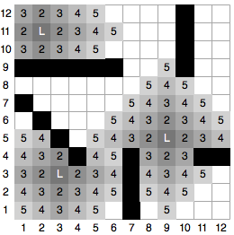
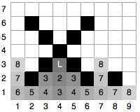
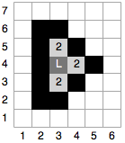
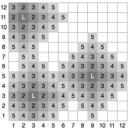

| Source file: | wet.{c, cpp, java} |
| Input file: | wet.in |
Alice owns a construction company in the town of Norainia, famous for its unusually dry weather. In fact, it only rains a few days per year there. Because of this phenomenon, many residents of Norainia neglect to do roof repairs until leaks occur and ruin their floors. Every year, Alice receives a deluge of calls from residents who need the leaks fixed and floor tiles replaced. While exquisite in appearance, Norainia floor tiles are not very water resistant; once a tile becomes wet, it is ruined and must be replaced. This year, Alice plans to handle the rainy days more efficiently than in past years. She will hire extra contractors to dispatch as soon as the calls come in, so hopefully all leaks can be repaired as soon as possible. For each house call, Alice needs a program to help her determine how many replacement tiles a contractor team will need to bring to complete the job.
For a given house, square floor tiles are arranged in a rectangular grid. Leaks originate from one or more known source locations above specific floor tiles. After the first minute, the tiles immediately below the leaks are ruined. After the second minute, water will have spread to any tile that shares an edge with a previously wet tile. This pattern of spreading water continues for each additional minute. However, the walls of a house restrict the water; if a damaged area hits a wall, the water does not penetrate the wall. We assume there are always four outer walls surrounding the entire house. A house may also have a number of additional "inner" walls; each inner wall is comprised of a connected linear sequence of locations (which may or may not be connected to the outer walls or to each other).
As an example, Figure 1 shows water damage (in gray) that would result from three initial leaks (each marked with a white letter 'L') after each of the first five minutes of time. Tiles labeled '2' become wet during the second minute, tiles labeled '3' become wet during the third minute, and so forth. The black areas designate inner walls that restrict the flow of water. Note that after 5 minutes, a total of 75 tiles have been damaged and will need to be replaced. Figures 2 through 4 show other houses that correspond to the example inputs for this problem.
| 
75 wet tiles |
| Figure 1 |
|

17 wet tiles |

4 wet tiles |

94 wet tiles |
| Figure 2 | Figure 3 | Figure 4 |
Input: Each house is described beginning with a line having five
integral parameters:
The following 2L integers in the data set, on one or more
lines, are distinct
If
There will be one or more houses in the data file and a line with a single integer -1 designates the end of the data set.
Output: For each house, display the total number of tiles that are wet after T minutes.
| Example Input: | Example Output: |
|
12 12 5 3 5 2 11 3 3 9 5 1 9 6 9 1 7 4 4 7 1 7 4 10 9 10 12 11 4 12 4 9 7 8 1 3 4 3 2 2 6 6 6 2 2 6 8 2 8 2 6 7 50 1 3 3 4 2 2 2 6 3 6 5 4 5 4 3 2 12 12 5 3 0 2 11 3 3 9 5 -1 |
75 17 4 94 |